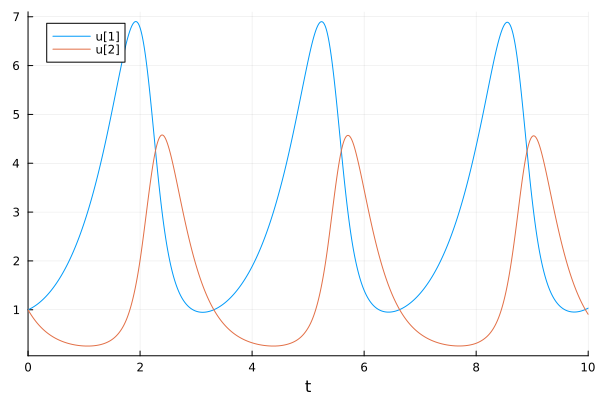
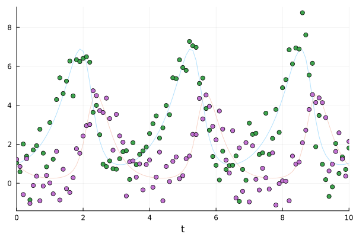
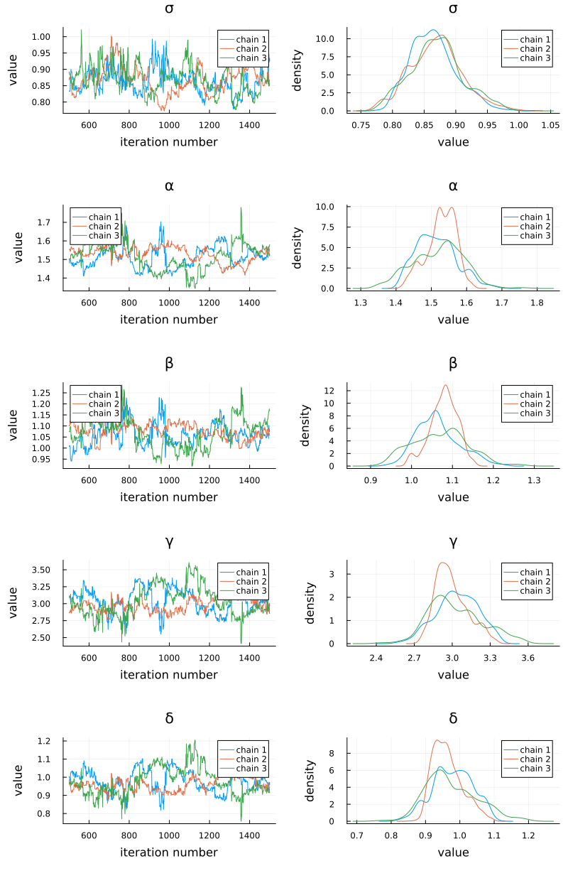

GPU-Accelerated Data-Driven Bayesian Uncertainty Quantification with Koopman Operators
What if you have data and a general model and would like to evaluate the probability that the fitted model outcomes would have had a given behavior? The purpose of this tutorial is to demonstrate a fast workflow for doing exactly this. It composes together a few different pieces of the SciML ecosystem:
- Parameter estimation with uncertainty with Bayesian differential equations by integrating the differentiable differential equation solvers with the Turing.jl library.
- Fast calculation of probabilistic estimates of differential equation solutions with parametric uncertainty using the Koopman expectation.
- GPU-acceleration of batched differential equation solves.
Let's dive right in.
Bayesian Parameter Estimation with Uncertainty
Let's start by importing all the necessary libraries:
using OrdinaryDiffEq
using Turing, Distributions
using KernelDensity
using SciMLExpectations, Cuba
using DiffEqGPU
using Plots, StatsPlots
using LinearAlgebra
using Random;
Random.seed!(1);Random.TaskLocalRNG()For this tutorial, we will use the Lotka-Volterra equation:
function lotka_volterra(du, u, p, t)
@inbounds begin
x = u[1]
y = u[2]
α = p[1]
β = p[2]
γ = p[3]
δ = p[4]
du[1] = (α - β * y) * x
du[2] = (δ * x - γ) * y
end
end
p = [1.5, 1.0, 3.0, 1.0]
u0 = [1.0, 1.0]
prob1 = ODEProblem(lotka_volterra, u0, (0.0, 10.0), p)
sol = solve(prob1, Tsit5())
plot(sol)
From the Lotka-Volterra equation, we will generate a dataset with known parameters:
sol1 = solve(prob1, Tsit5(), saveat = 0.1)retcode: Success
Interpolation: 1st order linear
t: 101-element Vector{Float64}:
0.0
0.1
0.2
0.3
0.4
0.5
0.6
0.7
0.8
0.9
⋮
9.2
9.3
9.4
9.5
9.6
9.7
9.8
9.9
10.0
u: 101-element Vector{Vector{Float64}}:
[1.0, 1.0]
[1.061078067335645, 0.8210842775886172]
[1.1440276717257596, 0.6790526689784505]
[1.2491712125724797, 0.5668931465840911]
[1.3776445705636422, 0.4788129513794749]
[1.531230817748001, 0.4101564670868259]
[1.7122697558187612, 0.35726544879975475]
[1.923578275830024, 0.31734720616177303]
[2.168391089699017, 0.2883888437879508]
[2.4502506671409394, 0.269053709396334]
⋮
[1.8172822933735997, 4.0649465584129265]
[1.4427612812619384, 3.5397375370727997]
[1.208908097600856, 2.9914549653863087]
[1.0685925939417154, 2.4820728869567192]
[0.9910229629170664, 2.037244541628096]
[0.9574213502706179, 1.6632055506392072]
[0.9569793948457254, 1.3555870105714916]
[0.9835609119575065, 1.106286805618538]
[1.0337581330572163, 0.9063703732075971]Now let's assume our dataset should have noise. We can add this noise in and plot the noisy data against the generating set:
odedata = Array(sol1) + 0.8 * randn(size(Array(sol1)))
plot(sol1, alpha = 0.3, legend = false);
scatter!(sol1.t, odedata');
Now let's assume that all we know is the data odedata and the model form. What we want to do is use the data to inform us of the parameters, but also get a probabilistic sense of the uncertainty around our parameter estimate. This is done via Bayesian estimation. For a full look at Bayesian estimation of differential equations, look at the Bayesian differential equation tutorial from Turing.jl.
Following that tutorial, we choose a set of priors and perform NUTS sampling to arrive at the MCMC chain:
@model function fitlv(data, prob1)
σ ~ InverseGamma(2, 3) # ~ is the tilde character
α ~ truncated(Normal(1.5, 0.5), 1.0, 2.0)
β ~ truncated(Normal(1.2, 0.5), 0.5, 1.5)
γ ~ truncated(Normal(3.0, 0.5), 2, 4)
δ ~ truncated(Normal(1.0, 0.5), 0.5, 1.5)
p = [α, β, γ, δ]
prob = remake(prob1, p = p)
predicted = solve(prob, Tsit5(), saveat = 0.1)
for i in 1:length(predicted.u)
data[:, i] ~ MvNormal(predicted.u[i], σ^2 * I)
end
end
model = fitlv(odedata, prob1)
# This next command runs 3 independent chains without using multithreading.
# NUTS uses ForwardDiff by default for automatic differentiation.
# As of Turing v0.45, `sample` returns a `FlexiChains.VNChain` by default.
chain = sample(model, NUTS(0.45), MCMCSerial(), 1000, 3)╭─FlexiChain (1000 iterations, 3 chains) ──────────────────────────────────────╮
│ ↓ iter = 501:1500 │
│ → chain = 1:3 │
│ │
│ Parameters (5) ── AbstractPPL.VarName │
│ Float64 σ, α, β, γ, δ │
│ │
│ Extras (14) │
│ Int64 n_steps, tree_depth │
│ Bool is_accept, numerical_error │
│ Float64 acceptance_rate, log_density, hamiltonian_energy, │
│ hamiltonian_energy_error, max_hamiltonian_energy_error, step_size, │
│ nom_step_size, logprior, loglikelihood, logjoint │
╰──────────────────────────────────────────────────────────────────────────────╯This chain gives a discrete approximation to the probability distribution of our desired quantities. We can plot the chains to see these distributions in action:
plot(chain)
Great! From our data, we have arrived at a probability distribution for our parameter values.
Evaluating Model Hypotheses with the Koopman Expectation
Now, let's try to ask a question: what is the expected value of x (the first term in the differential equation) at time t=10 given the known uncertainties in our parameters? This is a good tutorial question because all other probabilistic statements can be phrased similarly. Asking a question like, “what is the probability that x(T) > 1 at the final time T?”, can similarly be phrased as an expected value (probability statements are expected values of characteristic functions which are 1 if true 0 if false). So in general, the kinds of questions we want to ask and answer are expectations about the solutions of the differential equation.
The trivial to solve this problem is to sample 100,000 sets of parameters from our parameter distribution given by the Bayesian estimation, solve the ODE 100,000 times, and then take the average. But is 100,000 ODE solves enough? Well it's hard to tell, and even then, the convergence of this approach is slow. This is the Monte Carlo approach, and it converges to the correct answer by sqrt(N). Slow.
However, the Koopman expectation can converge with much fewer points, allowing the use of higher order quadrature methods to converge exponentially faster in many cases. To use the Koopman expectation, we first need to define our observable function g. This function designates the thing about the solution we wish to calculate the expectation of. Thus for our question “what is the expected value of xat time t=10?” we would simply use:
function g(sol, p)
sol[1, end]
endg (generic function with 1 method)Now we need to use the expectation call, where we need to provide our initial condition and parameters as probability distributions. For this case, we will use the same constant u0 as before. But, let's turn our Bayesian MCMC chains into distributions through kernel density estimation (the plots of the distribution above are just KDE plots!).
p_kde = [kde(vec(chain[@varname(α)])), kde(vec(chain[@varname(β)])),
kde(vec(chain[@varname(γ)])), kde(vec(chain[@varname(δ)]))]4-element Vector{KernelDensity.UnivariateKDE{StepRangeLen{Float64, Base.TwicePrecision{Float64}, Base.TwicePrecision{Float64}, Int64}}}:
KernelDensity.UnivariateKDE{StepRangeLen{Float64, Base.TwicePrecision{Float64}, Base.TwicePrecision{Float64}, Int64}}(1.3015121150971496:0.00025479667119882764:1.8230809010411497, [1.440096265437063e-5, 1.515574354771232e-5, 1.6051134446914972e-5, 1.7094657966065796e-5, 1.829486889626253e-5, 1.96614043197485e-5, 2.1205038597038595e-5, 2.293774289174877e-5, 2.4872749993853915e-5, 2.702462400261396e-5 … 1.3590810939323461e-5, 1.3153477301131034e-5, 1.283028564014188e-5, 1.2620278144304109e-5, 1.252325179024183e-5, 1.2539769045805116e-5, 1.267117338477064e-5, 1.29196066085413e-5, 1.3288031372127307e-5, 1.3780255649908923e-5])
KernelDensity.UnivariateKDE{StepRangeLen{Float64, Base.TwicePrecision{Float64}, Base.TwicePrecision{Float64}, Int64}}(0.8819260617026117:0.00021514889813939765:1.3223358561939587, [2.4102930854752458e-5, 2.563038004144147e-5, 2.736966953253983e-5, 2.933293128037917e-5, 3.153362352836808e-5, 3.3986589838885806e-5, 3.6708122695738865e-5, 3.971603120067613e-5, 4.30297135753932e-5, 4.667023385485081e-5 … 1.8661421323340477e-5, 1.847989818015705e-5, 1.8451789472795355e-5, 1.8578314072037472e-5, 1.886164851905292e-5, 1.930494618829215e-5, 1.9912361573837245e-5, 2.0689076517754756e-5, 2.1641331929611596e-5, 2.2776461460871644e-5])
KernelDensity.UnivariateKDE{StepRangeLen{Float64, Base.TwicePrecision{Float64}, Base.TwicePrecision{Float64}, Int64}}(2.2856732137942775:0.0007064989859014535:3.731876637934553, [3.621379740748054e-6, 3.7204455460848607e-6, 3.848897092595394e-6, 4.007580969078717e-6, 4.1975193472154615e-6, 4.419914195530339e-6, 4.676152124405419e-6, 4.967809807743251e-6, 5.296660049225466e-6, 5.66467844809182e-6 … 4.180734527015062e-6, 3.995713508064824e-6, 3.840762360374228e-6, 3.7150745426650644e-6, 3.6180091007587123e-6, 3.549089129917249e-6, 3.5080007099175248e-6, 3.494592478281433e-6, 3.508875715318993e-6, 3.5510250635528706e-6])
KernelDensity.UnivariateKDE{StepRangeLen{Float64, Base.TwicePrecision{Float64}, Base.TwicePrecision{Float64}, Int64}}(0.7136953349760019:0.00026117198602583686:1.24831439037089, [1.4844316440054683e-5, 1.4699427469455628e-5, 1.468403134463614e-5, 1.4797743363104132e-5, 1.5041014915784245e-5, 1.541513238079162e-5, 1.592221921509207e-5, 1.6565241003796416e-5, 1.7348013683804453e-5, 1.8275214694440933e-5 … 2.411561301229881e-5, 2.2463632885827423e-5, 2.0993467977348246e-5, 1.9695617767379048e-5, 1.8561603392974746e-5, 1.7583934461828932e-5, 1.6756079294300008e-5, 1.607243821011295e-5, 1.5528320318480837e-5, 1.511992326896916e-5])Now that we have our observable and our uncertainty distributions, let's calculate the expected value. Using GenericDistribution, SciMLExpectation can calculate expectations of any distribution-like object that supports evaluating the probability density function, for the Koopman solver algorithm, and generating random numbers for the MonteCarlo solver algorithm.
pdf_func(x) = prod(pdf.(p_kde, x))
rand_func() = nothing # not needed for Koopman
lb = [p_kde_i.x[begin] for p_kde_i in p_kde] #lower bound for integration
ub = [p_kde_i.x[end] for p_kde_i in p_kde] #upper bound for integration
gd = GenericDistribution(pdf_func, rand_func, lb, ub)
h(x, u, p) = u, x
sm = SystemMap(prob1, Tsit5())
exprob = ExpectationProblem(sm, g, h, gd)
sol = solve(exprob, Koopman(); reltol = 1e-2, abstol = 1e-2)
sol.uNote how that gives the expectation and a residual for the error bound!
sol.residGPU-Accelerated Expectations
Are we done? No, we need to add some GPUs! As mentioned earlier, probability calculations can take quite a bit of ODE solves, so let's parallelize across the parameters. DiffEqGPU.jl allows you to GPU-parallelize across parameters by using the Ensemble interface. Note that you do not have to do any of the heavy lifting: all the conversion to GPU kernels is done automatically by simply specifying EnsembleGPUArray as the ensembling method. For example:
function lotka_volterra(du, u, p, t)
@inbounds begin
x = u[1]
y = u[2]
α = p[1]
β = p[2]
γ = p[3]
δ = p[4]
du[1] = (α - β * y) * x
du[2] = (δ * x - γ) * y
end
end
p = [1.5, 1.0, 3.0, 1.0]
u0 = [1.0, 1.0]
prob = ODEProblem(lotka_volterra, u0, (0.0, 10.0), p)
prob_func = (prob, ctx) -> remake(prob, p = rand(Float64, 4) .* p)
monteprob = EnsembleProblem(prob, prob_func = prob_func, safetycopy = false)
@time sol = solve(monteprob, Tsit5(), EnsembleGPUArray(), trajectories = 10_000,
saveat = 1.0f0)Let's now use this in the ensembling method. We need to specify a batch for the number of ODEs solved at the same time, and pass in our ensembling method. The following is a GPU-accelerated uncertainty quantified estimate of the expectation of the solution:
# batchmode = EnsembleGPUArray() #where to pass this?
sol = solve(exprob, Koopman(), batch = 100, quadalg = CubaSUAVE())